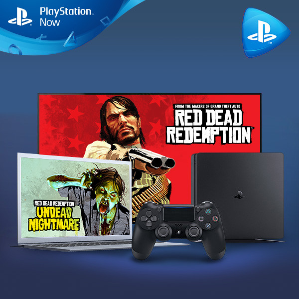
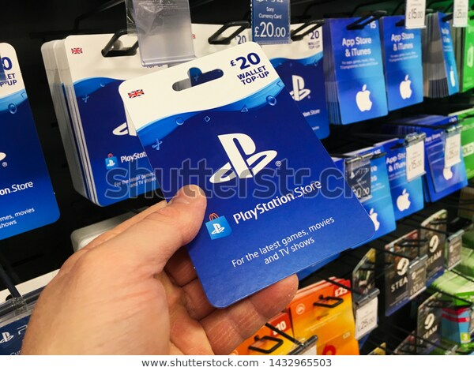
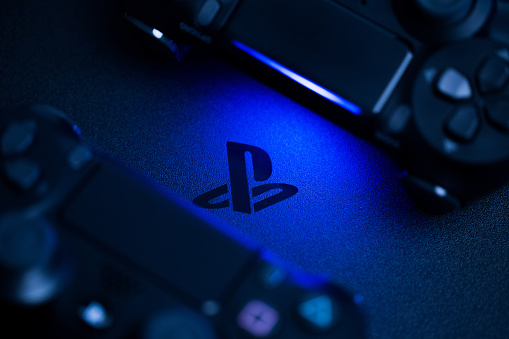

Definition

Qu'est-ce que PlayStation Now ? ... Avec PlayStation Now,
vous pouvez jouer instantanement en streaming a des jeux PS4,
PS3 et PS2 sur PS4 et PC, mais aussi telecharger des centaines
de jeux PS4 pour y jouer hors ligne sur votre console PS4.
un service de jeu a la demande permettant aux utilisateurs
de jouer à des jeux video par l’intermediaire d’un abonnement.
comment jouer sur PS-Now

Configurer un abonnement PlayStation Now est un jeu d'enfant.
Il suffit d'aller sur le PlayStation™Store et de se connecter.
Vous aurez besoin d'un moyen de paiement valide associe à votre
compte pour commencer un abonnement.
Une fois votre abonnement achete, vous pouvez sélectionner des
jeux à streamer ou telecharger sur l'application PlayStation Now.
les differents jeux sur PS-Now

Certain jeux sont momentanes, d'autres non.
Ils y en a plus de 355 jeux, en voila les meilleurs:
-MediEvil
-Friday the 13th
-Trine 4: The Nightmare Prince
-Rad
-Resident Evil 7 (jusqu’au 10/12/20)
-Watch Dogs 2
-Just Cause 4
-Beyound: Two Souls
-God Of War 3
-Until Dawn
-Hitman 2
-Uncharted 3
-Street Fighter V
-Bloodborn
-The Last Of Us
-Final Fantasy
-Mafia III
-WW2 2K19
-Hello Neighbor